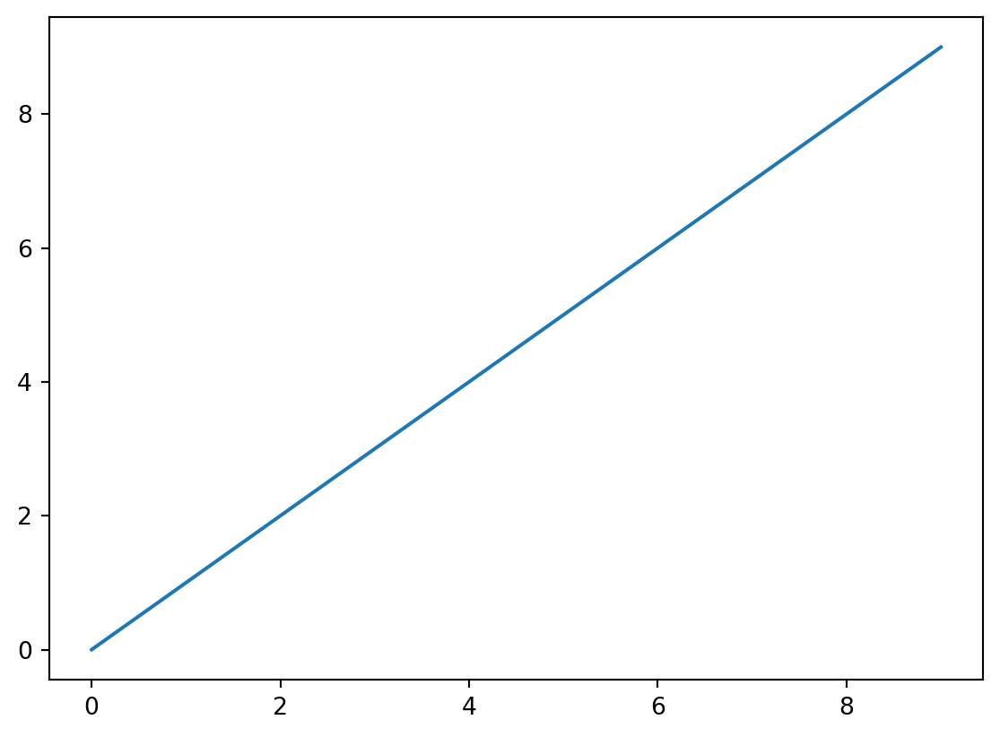
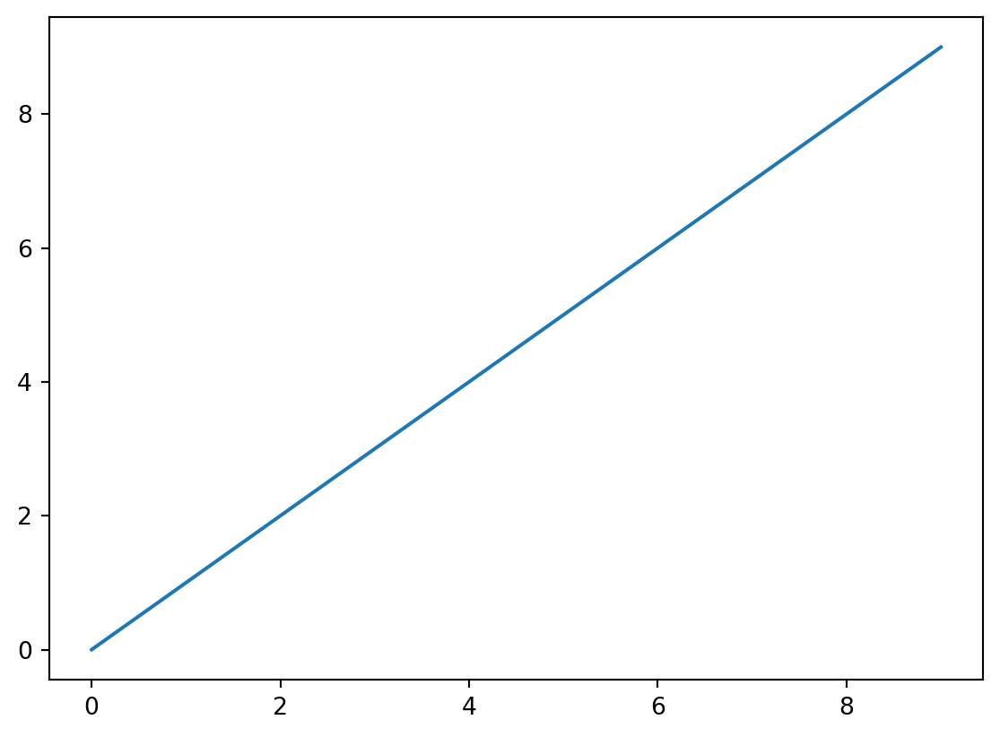

import matplotlib.pyplot as plt
x = range(0,10)
plt.plot(x)
Ceci est un tutoriel d’introduction à l’analyse de réseau avec Python centré sur le seul module NetworkX. Ce module étant très riche, toutes les fonctions ne sont pas évoquées ici.
Ce tutoriel s’adresse aux personnes :
Le principal module d’analyse de réseau en Python est NetworkX (Hagberg et al. (2008)). Le module igraph, couramment utilisé pour l’analyse de réseau avec R, est également disponible en Python mais semble beaucoup moins utilisé. Des modules plus confidentiels sont disponibles et seront évoqués dans des billets ultérieurs.
Ce document ne prétend pas être exhaustif mais vise à présenter les points suivants :
Étant débutant en Python, ce support est amené à être amélioré et enrichi dans les mois (années ?…) à venir. Le code proposé n’est pas nécessairement le plus efficace ni le plus court. Mais il fonctionne. Le script 2023_07_networkx.py permet de reproduire toutes les opérations décrites dans ce tutoriel.
Si vous n’avez jamais utilisé Python, le plus simple est sans doute d’installer la distribution Anaconda. C’est un peu une usine à gaz : ça installe plein de logiciels dont on n’a pas nécessairement besoin et avec des versions qui ne sont pas toujours les plus récentes mais au moins ça marche. Une fois Anaconda installée, ne le lancez pas : c’est lourd, lent et inutile. Il est plus rapide de lancer le Anaconda Power Shell Prompt puis, dans l’invite de commande, de taper spyder. L’IDE Spyder, assez similaire à RStudio, permet de créer ses scripts en Python dans un environnement agréable (rubrique d’aide, autocomplétion, feneêtre graphique, liste des objets importés ou créés, etc.).
Il est possible d’installer une version plus légère d’Anaconda, Miniconda. Il est également possible d’installer Python et Spyder de façon autonome. Les règlages pour que les logiciels fonctionnent les uns avec les autres peuvent être un peu plus longs. Idem si vous souhaitez utiliser Python dans un environnement RStudio - ce qui est le cas de ce tutoriel rédifgé en Quarto.
Dernier conseil : n’hésitez pas à tout désintaller quand ça bloque avant de réinstaller les briques une par une en feuilletant bien la documentation…
Si vous n’avez jamais utilisé Python, les informations suivantes devraient vous permettre de tester le script .py accompagnant ce tutoriel.
Python, comme R, est un logiciel modulaire. Il y a la base et des modules nécessaires pour faire telle ou telle manipulation. Comme R, certains modules sont quasi indispensables et très souvent utilisés ; l’immense majorité n’a aucun intérêt. L’ensemble des modules disponibles est accessible sur le Pypi. Un “bon” module est un module régulièrement mis à jour, avec une documentation intelligible et pour lequel on trouve des tutoriels en ligne. S’il est maintenu par plus d’une personne, c’est mieux.
Deux étapes pour les modules qui ne sont pas installés par défaut : les installer sur votre disque dur, les charger pour la session. Lorsqu’on charge un module, l’usage veut qu’on lui donne un nom abrégé. Certaines abréviations se retrouvent partout et je les utilise aussi. Pourquoi abréger les noms des modules ? Parce que pour appeler une fonction d’un module, on tape le nom du module, un point, puis le nom de la fonction.
Ce qui va donner des choses comme ça :
import matplotlib.pyplot as plt
x = range(0,10)
plt.plot(x)
Je charge la librairie matplotlib.pyplot et je lui donne un nom abregé (plt). Je crée une suite d’entiers de 0 à 10. J’appelle la fonction plot du module matplotlib.pyplot pour visualiser x.
Dans Spyder, pour exécuter une ou plusieurs lignes de code, le plus simple est de la ou les sélectionner puis de taper sur F9 (équivalent du Ctrl + Entrée de RStudio). Si vous avez des instructions avec des retours à la ligne (arguments séparés par des virgules ou boucle avec : et indentation), sélectionnez l’ensemble des lignes avant d’exécuter le code. Idem pour les figures : sélectionner tout ce qui concerne la figure (titre, étiquettes des abscisses et ordonnées, etc.).
La page du module NetworkX, Network Analysis with Python, https://networkx.org/, permet d’accéder à toute la documentation nécessaire pour prendre en main le module. Mais dès que l’on va vouloir réaliser une opération précise, surtout si on n’est pas familier du fonctionnement des objets dans cet environnement logiciel, parcourir stackoverflow est presque obligatoire. Sur stackoverflow, faites attention à la date des sujets : certaines solutions proposées peuvent être obsolètes.
# installer le module
# pip install networkx
# si distribution ana ou miniconda
# conda install package-name
# charger les modules utiles
import pandas as pd # manipulation de tableaux
import networkx as nx # analyse de réseau
import numpy as np # statistiques
import matplotlib.pyplot as plt # visualisation
# aide sur une fonction
# ?nom_module.nom_fonction
?pd.DataFrame.set_index
?nx.find_cliquesLe nombre de fonctions disponibles est impressionnant mais on obtient régulièrement des messages indiquant que telle fonction est “deprecated and will be removed”.
Je n’utilise pas l’écriture épicène, j’écris le plus souvent au féminin et utilise l’accord de proximité.↩︎